定序(Collation)，簡單來說定序就是在決定你的資料被排序與資料間比對的一個規則指引，看是要依據什麼規則來定.
MS SQL定序
SQL Server的定序預設設定視安裝類型而定。一般而言，預設會選擇Windows 系統地區設定的 SQL Server 定序，以台灣繁體中文來說是Chinese_Taiwan_Stroke_CI_AS，所有的定序可以看官方說明
而在MSSQL你可以直接下查詢去查你指定的DB定序
-- 目前資料庫定序（DB名稱為MAS_Mobile_OpenGIP）
SELECT DATABASEPROPERTYEX ('MAS_Mobile_OpenGIP' ,'Collation' )一般來說簡單的定序分類from
Case sensitivity(CS)
簡單來說就是區分大小寫，A跟a是不同的，如果是Case Insensitive(CI)的話A在排序或者查詢時就會被視為相同，也就是查詢A，連同a也會被查詢到。
Accent sensitivity(AS)
代表的是腔調上的差別，a跟á、o跟ó在腔調上是相同的，那查詢時是要視為相同，如果是的話，那就是Accent Insensitive(AI)，如果不是的話就視為Accent sensitive。
Kana Sensitivity(KS)
日文中的片假名(Hiragana)與平假名(Katakana)如果被視為相同，那就是Kana Insensitive(KI)，反之就是Kane sensitive.。
Width sensitivity(WS)
當半形字與全型自被視為相同(A跟Ａ)，那就是Width Insensitive(WI)，反之就是Width sensitive。
定序轉換流程
在開始流程前要先知道定序可分為三部分
DataBase定序
幫指定的DataBase作定序，之後產生的Table與Column會依據此這設定來指定預設的定序
Table定序
幫指定的Table作定序，之後產生的所有欄位(Column)資料會依據此設定來指定預設的定序
Column定序
幫指定的Column作定序，而改筆資料的內容會依據此設定做定序
由上解說可以知道他們三者在預設上有依序繼承的關係，但你也可以分別設定，圖解如下圖：

在瞭解完其實定序最小單位是Column之後，來做定序修改的實作，以下操作流城市已有實際資料的情況下你要如何做定序轉換的流程。
流程步驟如下：
先備份原先資料庫(bak檔案)
建置一新的定序資料庫
用step1的bak還原剛剛建立的定序資料庫
修改Database預設定序
修改Table預設定序
修改Column預設定序
完成定序修改並備份目前資料庫
會使用到的指令有以下幾個：
- 查出所有設為Chinese_Taiwan_Stroke_CI_AS的欄位
SELECT Table_Name,CoLumn_name,collation_name,*
FROM INFORMATION_SCHEMA.COLUMNS
WHERE collation_name='Chinese_Taiwan_Stroke_CI_AS'
ORDER BY TABLE_NAME,COLUMN_NAME- 檢查單一table的欄位定序設定(NULL表示非文字)
SELECT name, collation_name
FROM sys.columns
WHERE OBJECT_ID IN ( SELECT OBJECT_ID
FROM sys.objects
WHERE type = 'U'
AND name = 'actactivity')
GO- 產生欄位定序修改的語法(這邊以Chinese_Taiwan_Stroke_CI_AS修改為Chinese_Taiwan_Stroke_BIN為例)
SELECT * from (
SELECT ('ALTER TABLE ' + quotename(TABLE_NAME) +
' ALTER COLUMN ' + quotename(COLUMN_NAME) + ' ' + quotename(DATA_TYPE) +
CASE WHEN CHARACTER_MAXIMUM_LENGTH = -1 then '(max)'
WHEN DATA_TYPE in ('text','ntext') then ''
WHEN CHARACTER_MAXIMUM_LENGTH IS NOT NULL
THEN '('+(CONVERT(VARCHAR,CHARACTER_MAXIMUM_LENGTH)+')' )
ELSE isnull(CONVERT(VARCHAR,CHARACTER_MAXIMUM_LENGTH),' ') END
+'COLLATE Chinese_Taiwan_Stroke_BIN ' + CASE IS_NULLABLE
WHEN 'YES' THEN 'NULL'
ELSE 'NOT NULL'
END) AS script
from INFORMATION_SCHEMA.COLUMNS
WHERE collation_name='Chinese_Taiwan_Stroke_CI_AS'
) as Test
WHERE script != 'NULL'YourColumnName COLLATE chinese_taiwan_stroke_bin
- 目前資料庫定序(MAS_Mobile_OpenGIP為你要查詢的Database名稱)
YourColumnName COLLATE chinese_taiwan_stroke_bin- 目前資料庫定序(MAS_Mobile_OpenGIP為你要查詢的Database名稱)
SELECT DATABASEPROPERTYEX ('MAS_Mobile_OpenGIP' ,'Collation' )以下Step by Step的圖解(以Chinese_Taiwan_Stroke_CI_AS修改為Chinese_Taiwan_Stroke_BIN為例)：
- 修改Database定序
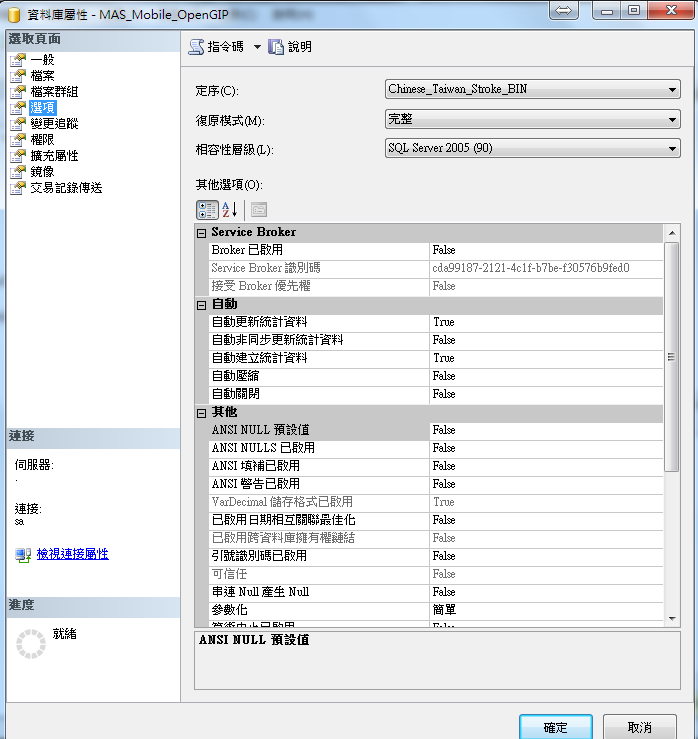
- 修改完後查詢Table時小寫差無該Table
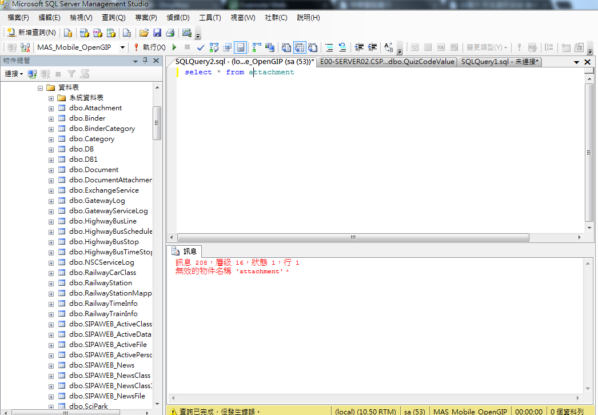
- 大寫才查得到
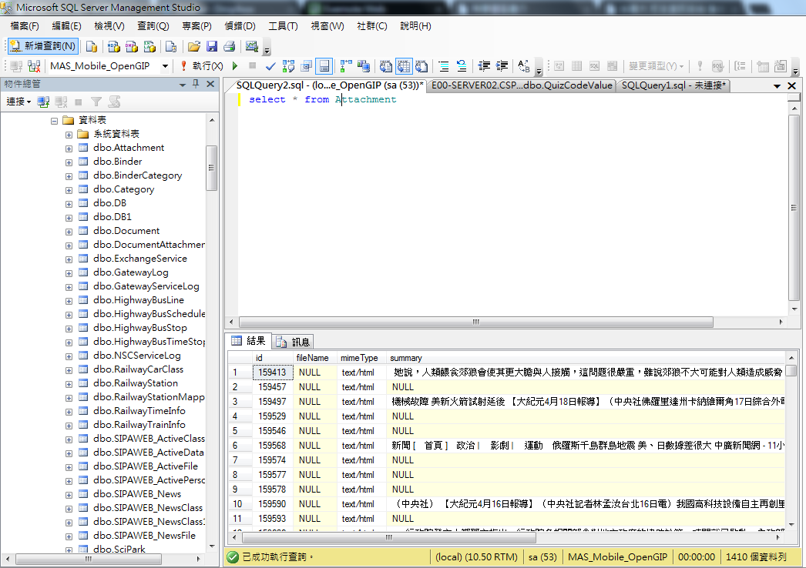
- 查詢欄位資料(用where對文字類型欄位用like查詢)沒分大小寫皆可查到
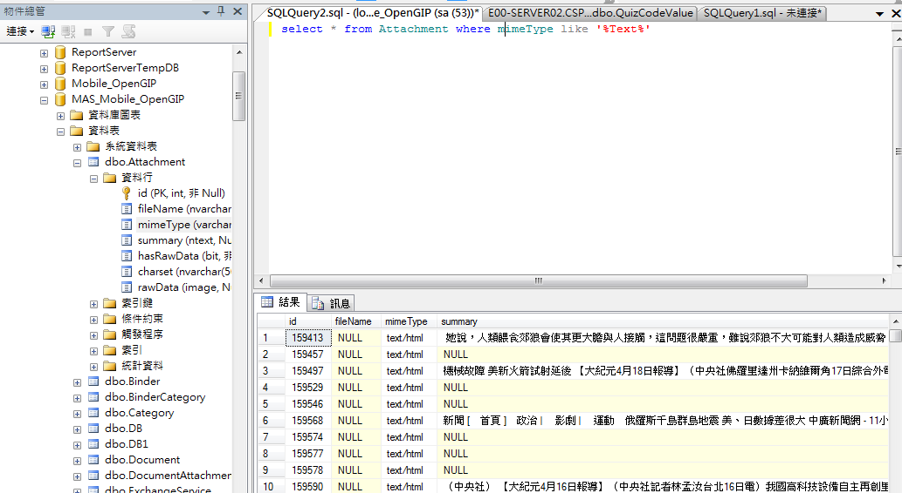
- 檢查該欄位確實還是Chinese_Taiwan_Stroke_CI_AS
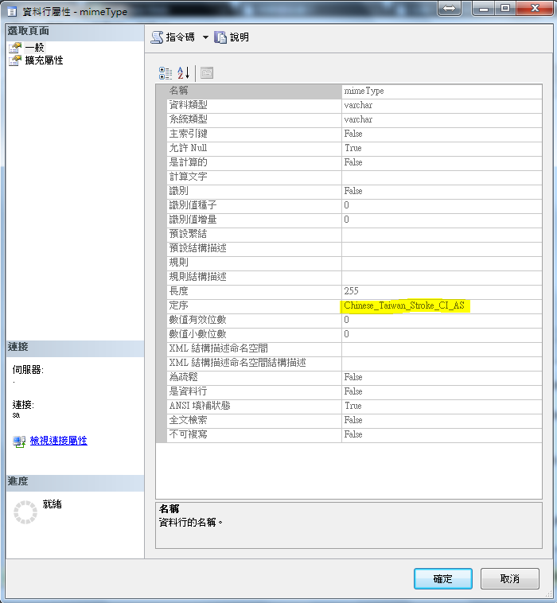
- 透過指令3產生查詢語法
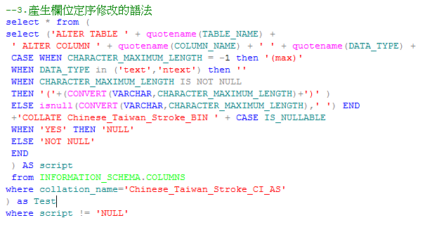
- 產生的查詢語法會包含Table與View的所有欄位(請將View的欄位先移除）
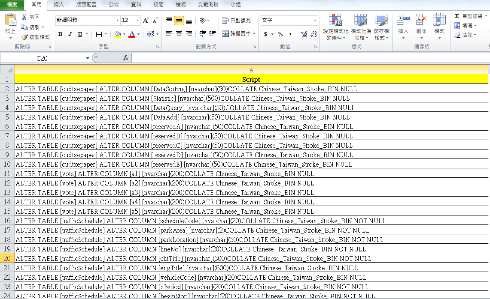
- 直接執行全部指令會發生錯誤，因為如果欄位是PK,FK或是有關聯其他Table的欄位需要先將該設定移除才可以修改或是透過9的步驟以介面方式手動調整即可連動修改
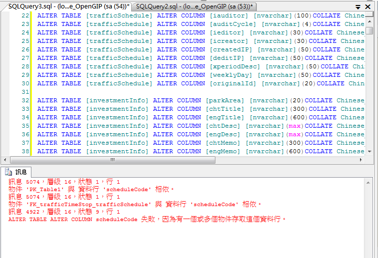
- 針對剛剛有問題的Table進去設計模式修改該Column的定序(右鍵->屬性->全文檢索規格中的定序)
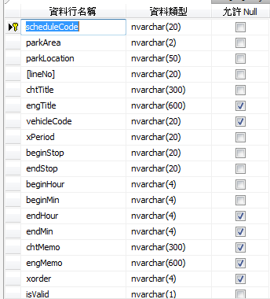
- 若該修正有包括其他欄位的關聯則會聯動修改
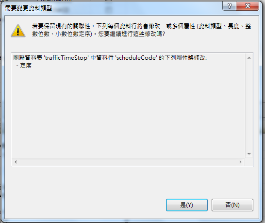
- 確認修改為我們要的Chinese_Taiwan_Stroke_BIN後儲存本次設計修正
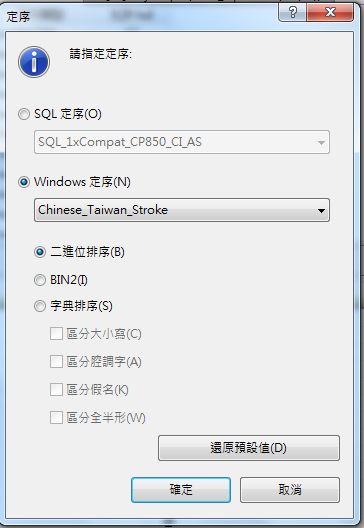
- 如果到外面看該欄位為資料庫預設值這邊則要參考你該Database的設定(請用指令5確認目前Database定序設定為Chinese_Taiwan_Stroke_BIN)
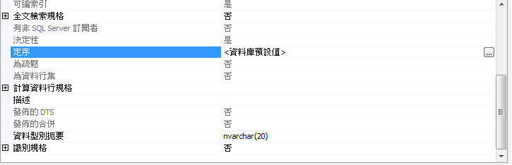
- 針對如果是View的修正無法使用上述流程，須手動將View重新建立(先取得所有View的Ceate Script後再將目前View全部刪除，再執行修改完的View Create Script)
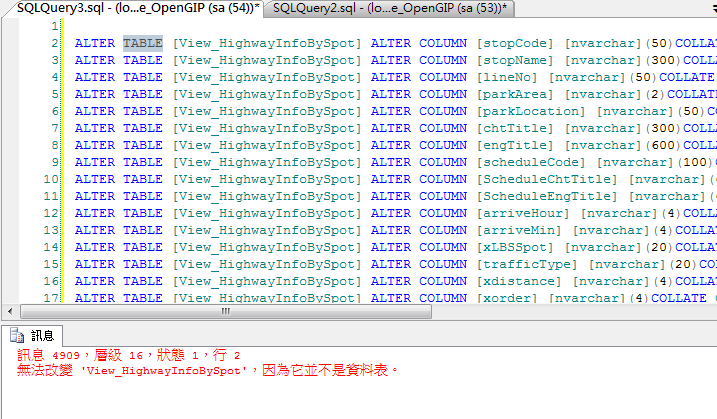
- 修改View指令的方法為在Select欄位時，針對每個字串欄位做指令4的定序宣告
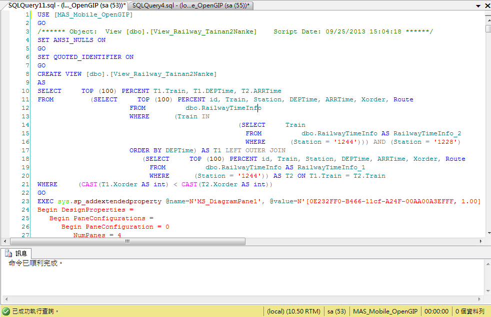
定序結果驗證
依照流程處理完資料後請依序驗證Database, Table與 Column的定序設定(透過指令1與指令5)都正確後可直接下查詢去檢查，以下列圖組為例：


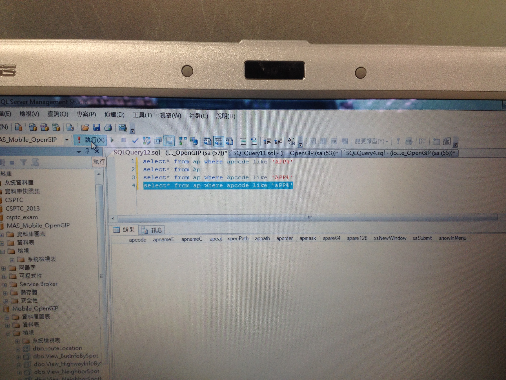
以上即可證明完成定序資料轉換。